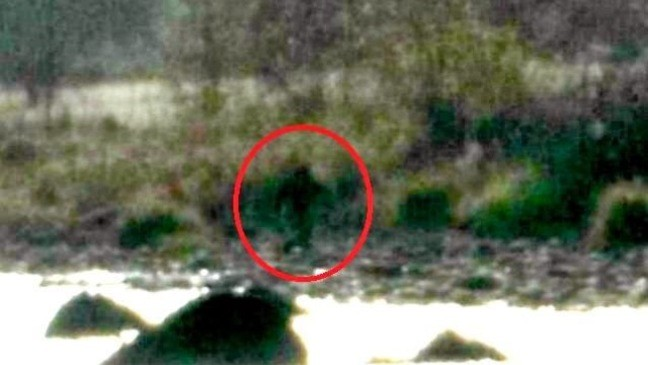
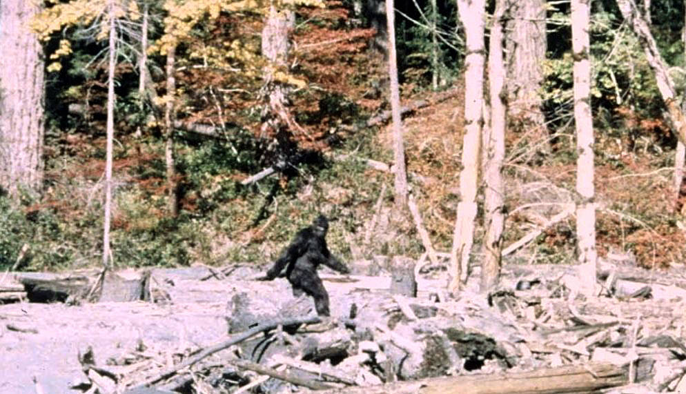

Recently, I've come across something very interesting when scrolling through images of monsters (i was searching them up after reading Frankenstein :). At first I saw nothing, thinking that it was just a bush, but looking closer, I saw a large humanoid figure. What's interesting is that it's extremely close to the descriptions of the monster in the book, Frankenstain by Mary Shelly. Could it really be the monster? I circled the monster in red for ya'll. If anyone could answer, please do!!
- John Doe
I know this might sound crazy, but... the monster is alive! In the book, it is said that the monster killed itself using fire. However, he probably was too cowardly to actually step in! So, it might be that he is roaming around finding a place to live in isolation!
- Rebecca Alicson
Nah bro no way it aint no moster bruh. prob just some human in a costume or smth.
- Bobbasement
The book is written over 200 years ago. I don't think the monster is still alive. Even if it had reason too, wouldn't the monster have died of old age?
- Thisman1234
Guys this guy is clearly trolling, don't know what you are thinking smh, shut this down! I'm not going to be fooled by some trap, trying to get attention and such
- robertaTheclass13
who reads books these days lmao
- nograss
that's not Frankenstein, that looks like bigfoot :0
anyone agree?
- DaThe0riest